Remote development in WSL
This tutorial walks you through enabling Windows Subsystem for Linux (WSL) and running Visual Studio Code in WSL using the WSL extension.
Prerequisites
You need Visual Studio Code installed.
Install the extension
The WSL extension enables you to run Visual Studio Code within the Windows Subsystem for Linux (WSL).

Prerequisite check
With the WSL extension installed, you will see a new Status bar item at the far left.
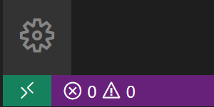
The Remote Status bar item can quickly show you in which context VS Code is running (local or remote) and clicking on the item will bring up the WSL extension commands.
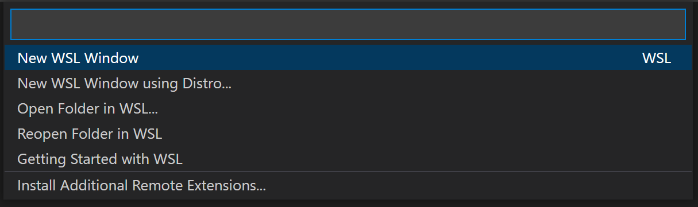
Enable WSL
Windows Subsystem for Linux (WSL) is an optional feature on Windows 10. You can enable it through the Windows Features dialog or PowerShell.
Windows Features dialog
In the Windows search bar, type 'features' to bring up the Turn Windows Features on and off dialog. Scroll down and check Windows Subsystem for Linux.
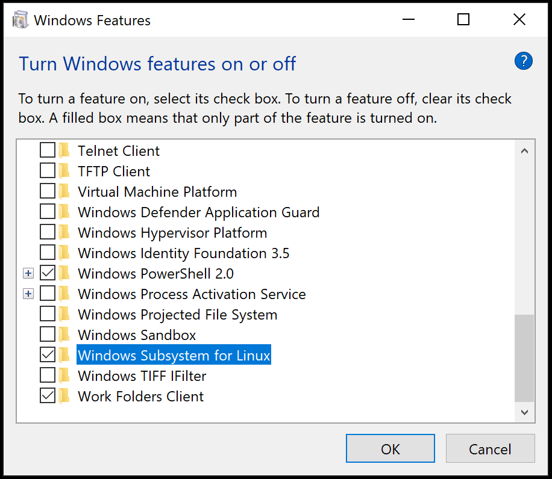
Select OK and you will be prompted to restart Windows.
PowerShell
If you prefer, you can open PowerShell as an Administrator and type:
Enable-WindowsOptionalFeature -Online -FeatureName Microsoft-Windows-Subsystem-Linux
After the command runs, you will be prompted to restart Windows.
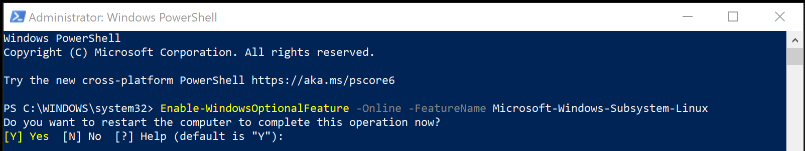
Check WSL
After restarting Windows, you can check that you have WSL enabled by opening a Command Prompt and typing 'wsl'.
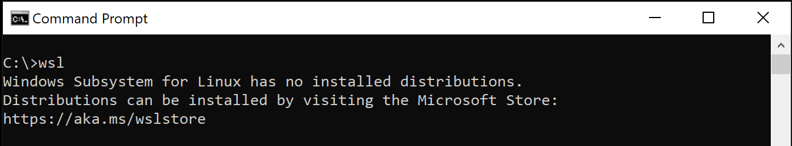
WSL is enabled, but you haven't installed a Linux distribution yet.
Install a Linux distro
You install Linux distributions for WSL from the Microsoft Store. You can use the store app, or search for a Linux distro in the Windows search bar. Choose the Linux distribution you want to install (for example Ubuntu) and follow the prompts.
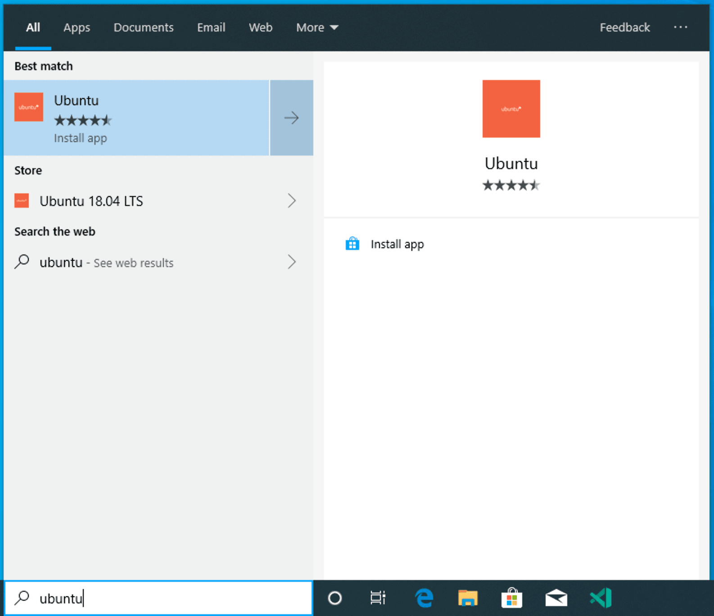
Select Install.
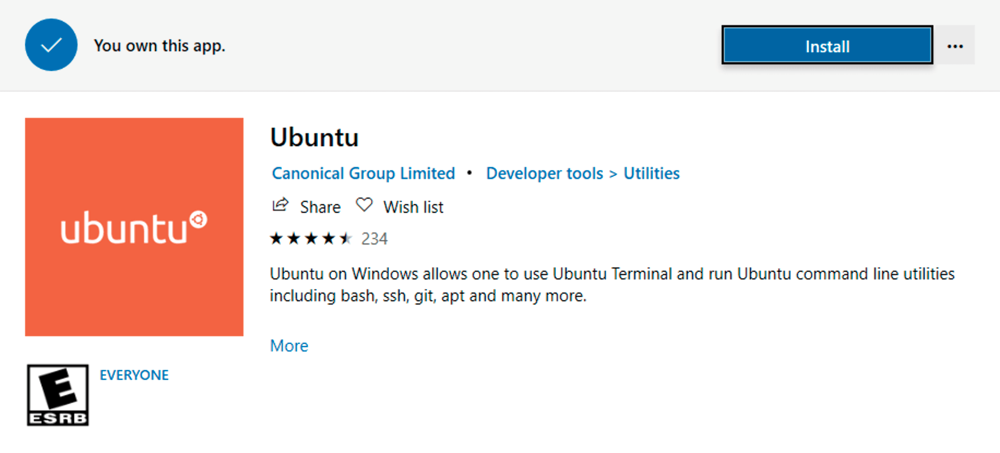
And when done, select Launch to get started. This will open a Linux terminal and complete the installation. You'll need to create a user ID and password since you are setting up a full Linux instance. You are now running Linux on Windows.
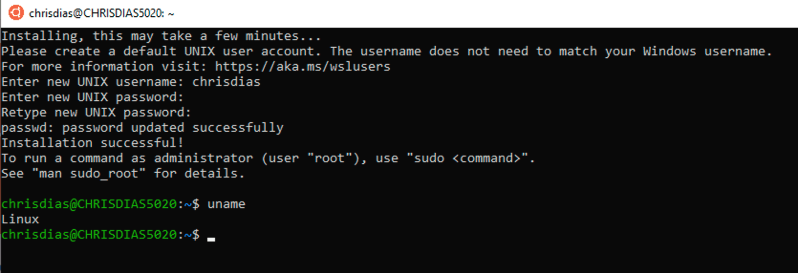
Python development
If you don't have Python already installed, run the following commands to install Python3 and pip, the package manager for Python, into your Linux installation.
sudo apt update
sudo apt install python3 python3-pip
And to verify, run:
python3 --version
Start with the canonical "Hello World" app. Create a new folder called "helloWorld" and then add a Python file that will print a message when run:
mkdir helloWorld && cd helloWorld
echo 'print("hello from python on ubuntu on windows!")' >> hello.py
python3 hello.py
In a remote Linux environment (this WSL distro is technically another machine without UI, that just happens to be running locally on your computer), your development tools and experiences are pretty limited. You can run Vim in the terminal to edit your file, or you can edit the sources on the Windows side through the \\wsl$ mount:

The problem with this model is that the Python runtime, pip, or any conda packages for that matter, are not installed on Windows.
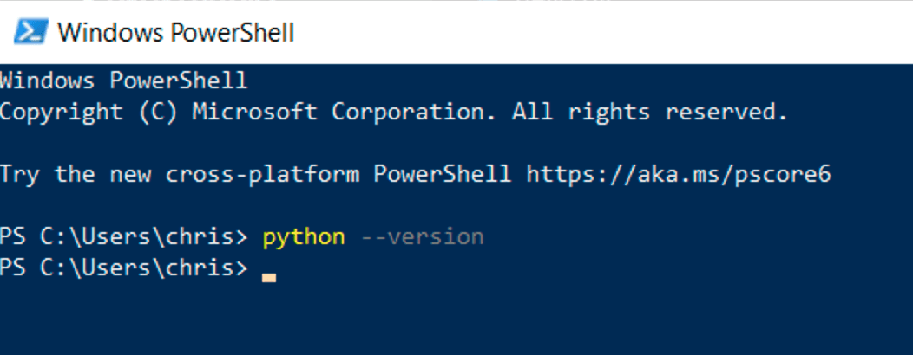
Remember, Python is installed in the Linux distro, which means if you're editing Python files on the Windows side, you can't run or debug them unless you install the same Python development stack on Windows. And that defeats the purpose of having an isolated Linux instance set up with all your Python tools and runtimes!
Run in WSL
In the WSL terminal, make sure you are in the helloWorld folder, and type in 'code .' to launch Visual Studio Code. The '.' argument tells VS Code to open the current folder. If you use the Insiders version of VS Code, you will have to run 'code-insiders .' instead.
Note: If this command does not work, you may need to restart your terminal, or you may not have added VS Code to your path when it was installed.
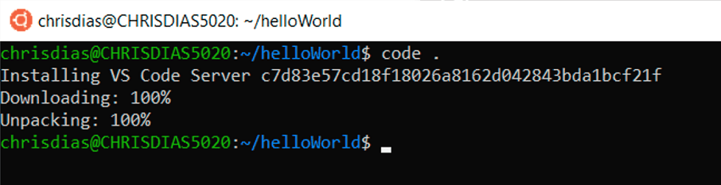
The first thing you'll see is a message about "Installing VS Code Server" (the c7d83e57… number is the version of the VS Code Server that matches the client-side tools you just installed). VS Code is installing a small server on the Linux side that the desktop VS Code will then talk to. That server will then install and host extensions in WSL, so that they run in the context of the tools and frameworks installed in WSL. In other words, your language extensions will run against the tools and frameworks installed in WSL, not against what is installed on the Windows side, as it should for the proper development experience.
The next thing that happens is VS Code will start and open the helloWorld folder. You may see a quick notification telling you that VS Code is connecting to WSL, and you may be prompted to allow access to the Node.js-based server.
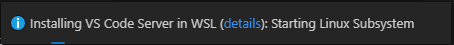
Now, when you hover over hello.py, you get the proper Linux path.
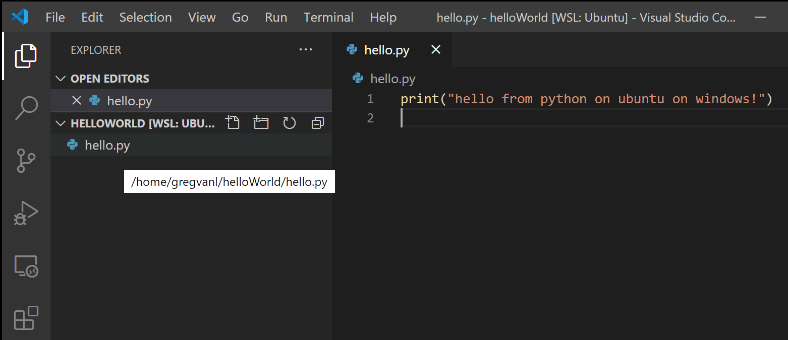
Integrated Terminal
Run Terminal > New Terminal (⌃` (Windows, Linux Ctrl+`)) to open a new terminal instance.
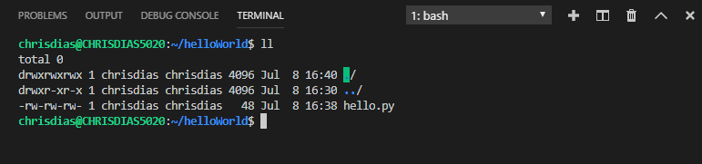
You'll start a new instance of the bash shell in WSL, again from VS Code running on Windows.
Tip: In the lower left corner of the Status Bar, you can see that you're connected to your WSL: Ubuntu instance.
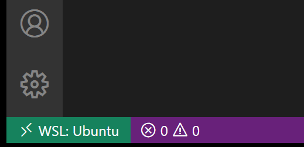
Edit and debug
Installing the Python extension (and additional tools)
Click on hello.py to open it for editing. You will be prompted with an extension recommendation, in this case to install the Microsoft Python extension, which will give you rich editing and debugging experiences. Go ahead and select Install and reload if prompted.
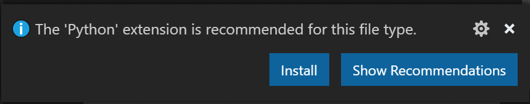
To prove that the extension is installed in WSL, open the Extensions view again (⇧⌘X (Windows, Linux Ctrl+Shift+X)). You will see a section titled WSL: Ubuntu – Installed, and you can see any extensions that are installed on the WSL side.
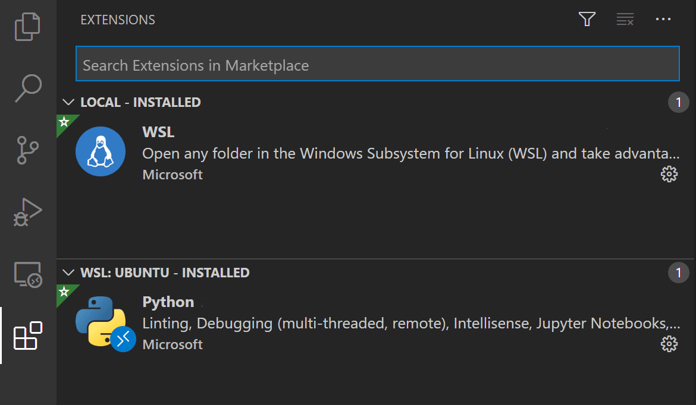
Upon reload, you'll also get prompted telling you that the pylint linter is not installed. Linters are used to show errors and warnings in source code. Go ahead and select Install.
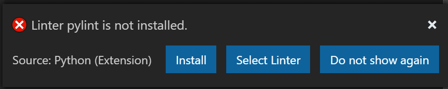
Now, when you edit your code, you get rich colorization and completions.
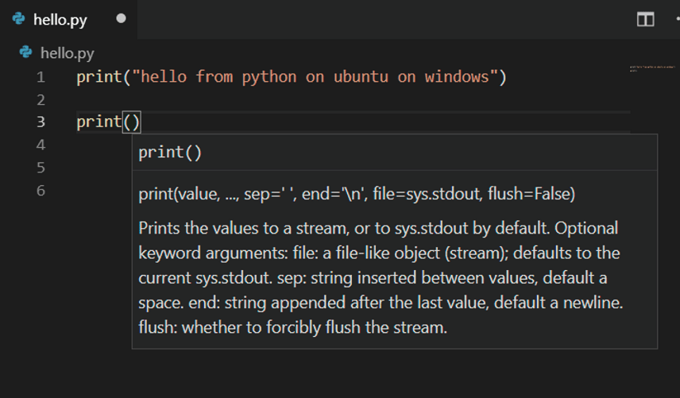
And when you save your file (⌘S (Windows, Linux Ctrl+S)), you'll get linting errors and warnings on the file.
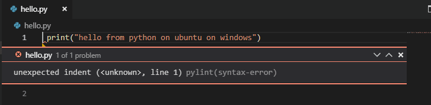
Debugging
With your tools set up, let's take this one step further. Set a breakpoint on line 1 of hello.py by clicking in the gutter to the left of the line number or by putting the cursor on the line and pressing F9.
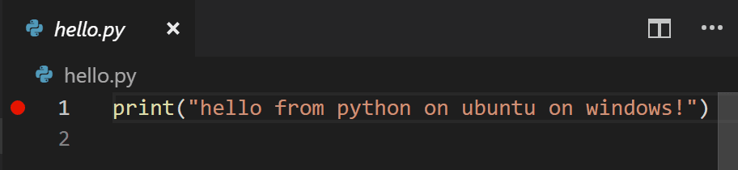
Now, press F5 to run your application. You will be asked how to run the application, and since this is a simple file, just choose Python File.
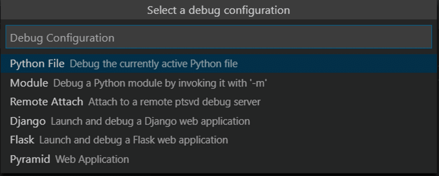
The app will start, and you'll hit the breakpoint. You can inspect variables, create watches, and navigate the call stack.
Press F10 to step and you'll see the output of the print statement in the debug console.
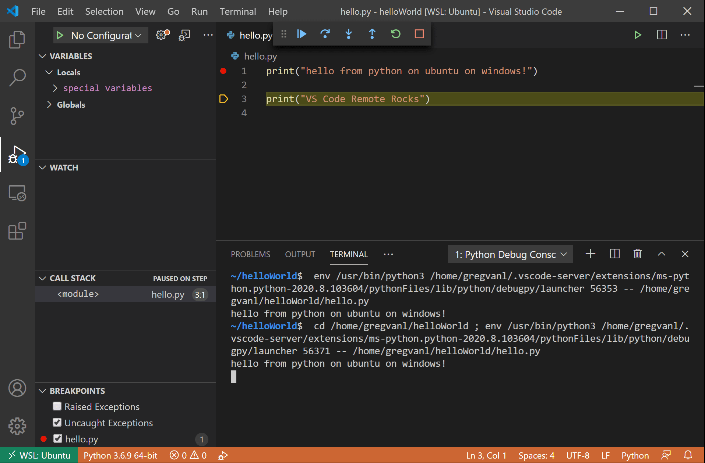
You get the full development experience of Visual Studio Code, using the Linux instance installed in WSL.
If you want to open another folder in WSL, open the File menu and choose Open Folder. You'll get a minimal file and folder navigator for the Linux file system, not the Windows file system.
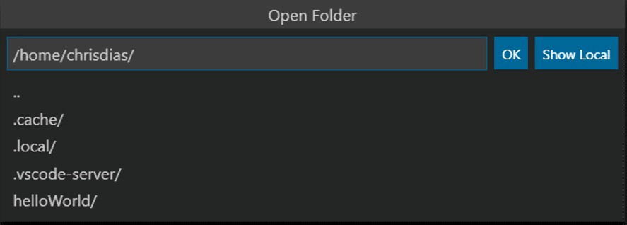
If you want to switch back to the Windows, select the Show Local option and you'll get the standard Windows File Open dialog.
Ending your WSL connection
You can end your session in WSL and go back to running VS Code locally with File > Close Remote Connection.
Congratulations
Congratulations, you've successfully completed this tutorial!
Next, check out the other Remote Development extensions.
Or get them all by installing the Remote Development Extension Pack.